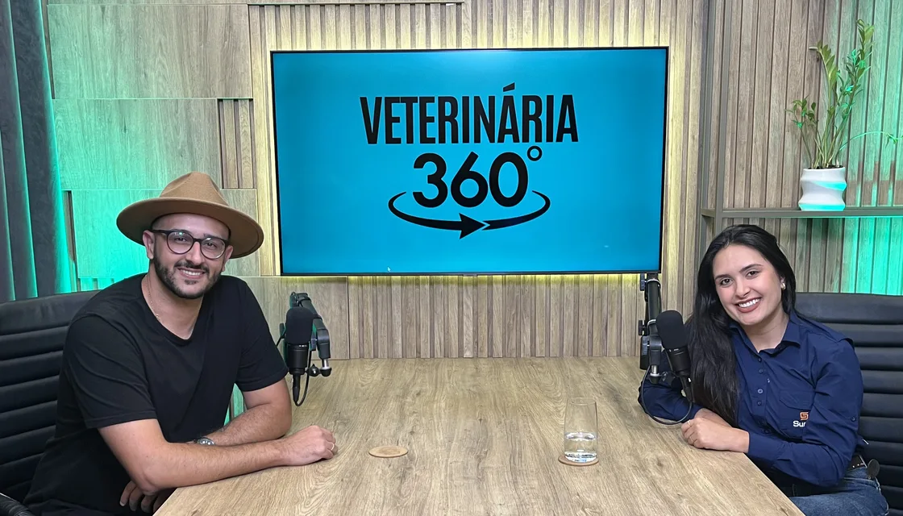
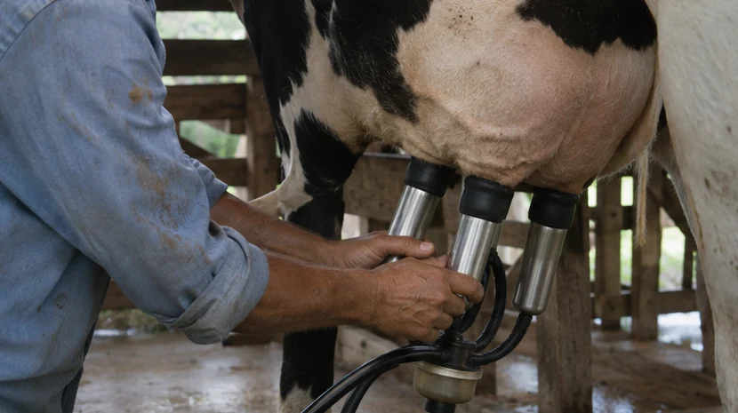
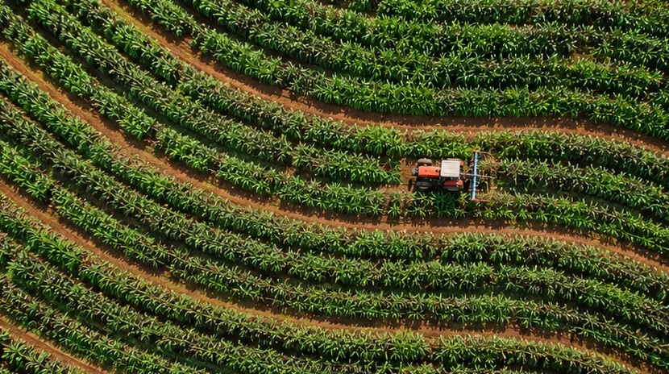
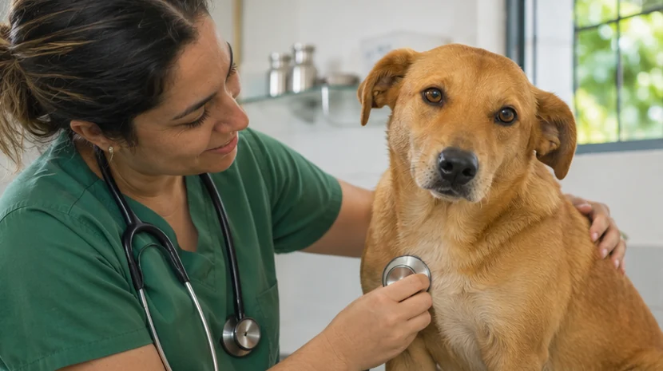

Na Estrada
Na Estrada
1.350 bezerros por ano
Daniel Marcondes

Do manejo de rebanhos à clínica de pequenos animais. Encontre uma conversa pelo tema, pelo convidado ou pelo nome do episódio.
11 episódios
Na Estrada
Daniel Marcondes
 Na Estrada
Na Estrada
Natanael Pereira

Na EstradaTiago Indiane

TecnologiaDiego Martins
 Agronegócio
Agronegócio
Maressa Vilela
Saúde pública
Luiz Henrique Barrochelo
Guilherme Piai

GestãoLeonardo Miranda
Ana Cristina Tasaka
Antonio Gorios e Diogo Borges
 Produção animal
Produção animal
José Vitor
Tente outro nome ou tema.
Veja também as novas publicações diretamente no canal.
Abrir o YouTube